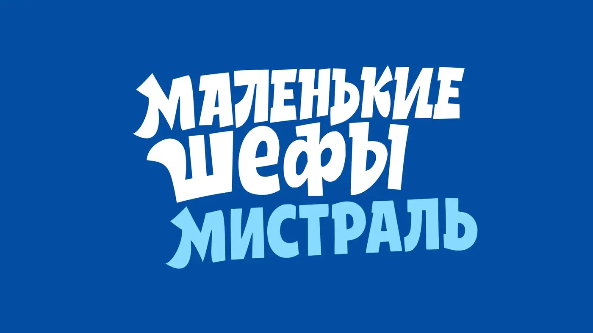
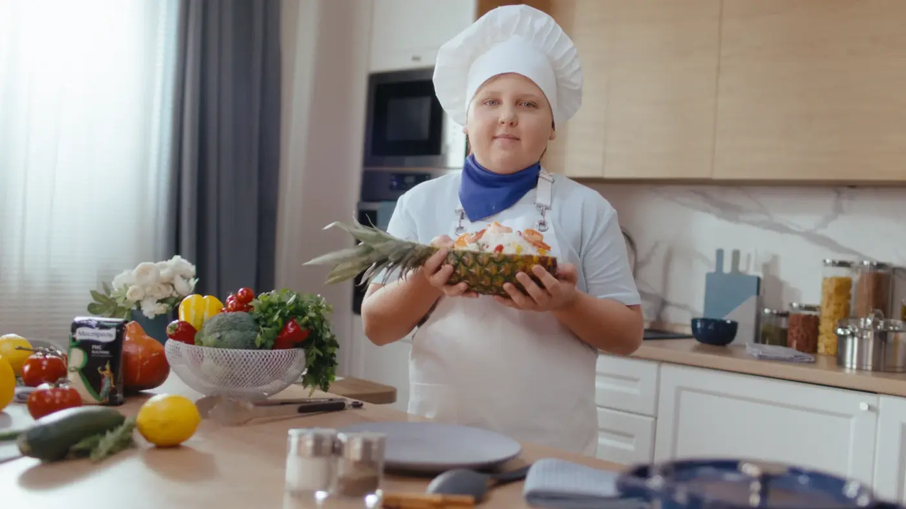
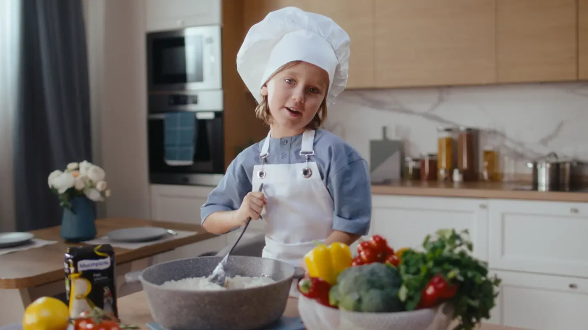

Семейный контент быстро создаёт эмоциональную связь
По данным исследования кампании, 73% женщин с детьми чаще выбирают семейный контент, чем другие форматы. Детские герои сразу делают коммуникацию ближе и человечнее.
Mistral · Special project · Food
Кампания, где дети разных возрастов становятся настоящими профессионалами в мире риса — нежными, забавными и убедительными.
О проекте
Мистраль раскрывается как экспертный, но эмоциональный бренд. Главные герои — дети — объясняют нюансы разных сортов риса так, словно у них многолетний профессиональный опыт.
Кампания соединяет семейный контент, продуктовую экспертизу и живой юмор. На отдельном лендинге идея развивается через рецепты, галерею и продуктовый каталог.
CASE BREAKDOWN / FAMILY CAMPAIGN
По данным исследования кампании, 73% женщин с детьми чаще выбирают семейный контент, чем другие форматы. Детские герои сразу делают коммуникацию ближе и человечнее.
Юные герои рассказывают о рисе так, словно обладают многолетним профессиональным опытом. Серьёзная экспертная интонация в исполнении детей создаёт юмор и запоминаемый характер.
Кампания раскрывает эмоциональную сторону бренда: любовь к продукту, аудитории и ежедневной домашней кухне становится такой же важной, как продуктовая компетентность.
Дети раскрывают особенности жасмина, арборио, басмати и других сортов, одновременно показывая разнообразие и простоту приготовления. Идея продолжается на отдельном хаб-лендинге.


